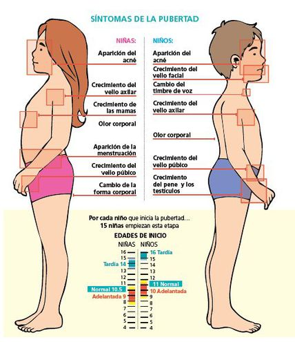

Sexualidad en la adolescencia
Contenido
- Significado
- Etapas
- Importancia de la educacion Sexual
- Metodos Anticonceptivos
Que es
Es aquella en la que el joven se desarrolla física y mentalmente, adquiriendo los caracteres sexuales secundarios (los que no tienen que ver con el órgano reproductor, como la nuez en los hombres o el ensanchamiento de las caderas en las mujeres) y desarrollando el pensamiento maduro; pero también despierta un comportamiento sexual, se transforma en un ser sexu se transforman de nuevo en nuevos materiales.
Etapas del desarrollo de la sexualidad
Al igual que el desarrollo físico y mental, la sexualidad se forma gradualmente y necesita pasar por una serie de etapas antes de completarse. Los cambios que se producen en la sexualidad pueden enmarcarse dentro de las etapas de la adolescencia y la pubertad, ya que las transformaciones físicas y mentales condicionan sobremanera el desarrollo de la sexualidad y de la identidad sexual:
- Adolescencia temprana (11-13 años): Durante esta etapa, que se caracteriza por la velocidad de los cambios físicos en el adolescente, el joven se encuentra aún lejos del deseo sexual adulto, por lo que se presenta como una fase de autoexploración (a menudo a través de la masturbación), debido a los nuevos cambios físicos y psíquicos que experimenta (como la aparición de los primeros impulsos sexuales y de la espermarquia o primera eyaculación), y también de exploración del contacto con el otro sexo.
- Adolescencia media (14-17 años): El adolescente ya está casi completamente desarrollado, sus órganos sexuales están listos para la reproducción y el deseo sexual se incrementa. En esta fase se desarrolla una sensación de invulnerabilidad y fortaleza que inducen al joven a comportarse de una forma narcisista. Se empieza a buscar el contacto habitual con el otro sexo y pueden llegar las primeras relaciones sexuales. El adolescente no sólo responde a sus impulsos sexuales, sino también a su narcisismo, es decir, pone a prueba la propia capacidad de atraer al otro. También se considera que durante esta etapa se produce el auge de las fantasías románticas.Las relaciones sociales fuera del entorno familiar, especialmente con amigos, empiezan a tener preponderancia, por lo que el adolescente contrapone los valores y la educación sexual recibida de sus padres con la de sus amigos (en muchas ocasiones llenas de mitos derivados de la poca o nula experiencia sexual), lo que puede acarrear riesgos, si a esto se suma que el adolescente aún no ha desarrollado del todo el pensamiento abstracto y en algunas ocasiones le cuesta pensar en las consecuencias de sus actos. Además, al no haber desarrollado por completo el pensamiento adulto, el adolescente utiliza los sentidos para expresar sus emociones.
- Adolescencia tardía (17-21 años): El adolescente se ha desarrollado por completo, física y psíquicamente. La capacidad de pensar en abstracto y de ser consciente de las consecuencias futuras de los actos hace que el joven pueda mantener relaciones sexuales maduras y seguras. El deseo ya no sólo responde a un estímulo o pulsión sexual, sino que el adolescente, ya adulto, comienza a buscar otros valores en sus relaciones sociales, como la confianza o la reciprocidad.

La importancia de recibir una buena educación sexual
La pubertad y el desarrollo sexual son etapas de cambios constantes, donde el deseo y los impulsos sexuales dominan a una parte racional que no está del todo desarrollada. Recibir una buena educación sexual es muy importante, no sólo a corto plazo, es decir, para que el adolescente supere sin riesgos sus etapas de maduración física y psíquica, sino también para establecer el comportamiento sexual que tendrá el joven cuando sea adulto.
Durante la adolescencia, el joven está expuesto a riesgos que se deben evitar mediante medidas preventivas:
- La sexualidad entra dentro de la intimidad: Las relaciones sexuales pertenecen a la intimidad de las personas, por lo que no es necesario compartir los detalles sobre las mismas, a no ser que se quiera hacer. Los padres y el entorno no deben presionar al adolescente.
- Desarrollo de habilidades sociales y de autocontrol: Los impulsos sexuales dominan a los racionales durante la adolescencia, sobre todo al comienzo de la fase de adolescencia media, donde el joven ya ha desarrollado por completo sus órganos sexuales pero no el pensamiento adulto. La educación debe proveer al adolescente de conocimientos que le permitan desarrollar conductas y comportamientos sexuales correctos.
- Informar: Es vital dotar al adolescente de la información necesaria sobre los riesgos que traen las relaciones sexuales sin protección (embarazo precoz, Enfermedades de Transmisión Sexual, etcétera), así como de los beneficios que reporta practicar sexo seguro.
Metodos anticonceptivos
| Metodo anticonceptivo |
Eficacia Porcentual |
| Metodos Hormonales |
98% |
| Metodos De Barrera |
93%-85% |
| Dispositivos Intrauterinos |
98% |
| Anticonceptivos De Emergencia |
95%-85% |
| Metodos Permanentes |
99.9% |
Autor
Alison Dahiana Pineda Velez, 10B